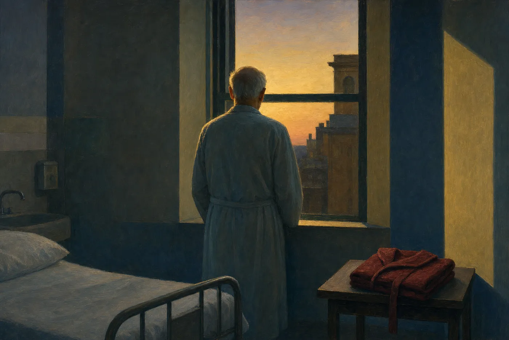
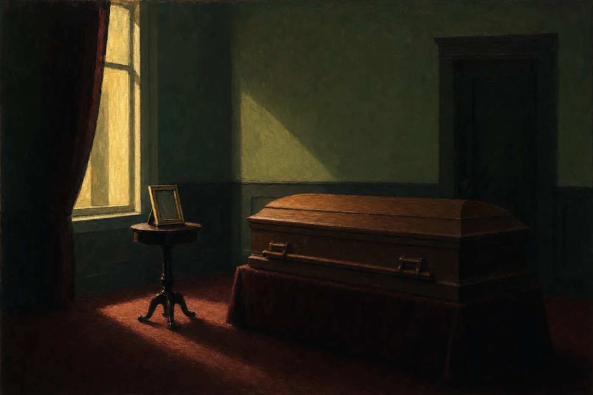
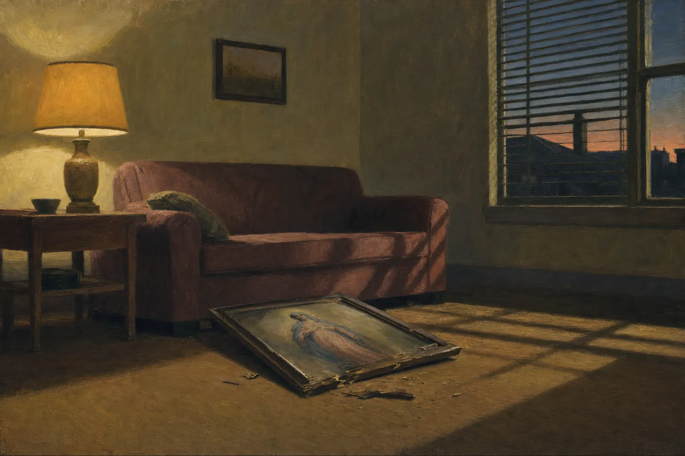

An Essay · On the Poetry of Crossings
The Unspoken Elegy
Objective correlative and the grief-work of Crossings — how a folded robe, a photograph on a table, and a shattered print of The Last Supper carry loss that the poems never once name outright.
I. The Word Grief Never Appears
Search Crossings for its own vocabulary of mourning and the search comes back nearly empty. The collection concerns itself largely with death — a father's decline in a hospital room, a great-uncle's emigration and death, a father-in-law's collapse on an ordinary morning — yet words such as grief, loss, devastated, and heartbroken do not appear in the poems this essay examines. What appears instead is a robe, folded; a photograph, framed; a print, shattered on a floor. That absence may be a significant part of the collection's method, helping spare, often flat statements carry emotion without naming it directly.
The method has a name in criticism — T. S. Eliot's objective correlative, the idea that emotion in art must be conveyed through a specific object or chain of events rather than asserted directly.1 But invoking Eliot risks making the technique sound cooler and more theoretical than it feels on the page. In Crossings, the object is never merely a symbol selected to represent grief from the outside. It is a piece of evidence the poem has actually witnessed — something the speaker touched, folded, or found broken — and the poem's authority comes from the specificity of that witnessing, not from any commentary laid over it.
II. The Robe on the Table: “Copacetic”
“Copacetic” opens the collection with a word borrowed from the speaker's father, a Marine who picked it up in Korea: “‘Everything copacetic?’ he says.”2 The poem's real subject is a hospital deathwatch, but it never says so in those terms. It reports instead: the father refuses Jell-O from a spoon, sleeps through most of a visit, grows agitated one night with “something about a trip,” and near the end stands at a window wearing “the robe my sister said / brought out the blue in his eyes.”2 When the speaker repeats the father's own question back to him — “Everything copacetic?” — the father's answer breaks the pattern of the euphemism that has organized the whole poem: “It was tough,” he says, the one moment in the poem where the family's inherited vocabulary of composure fails and something plainer gets through.2
The poem could have ended there, on that admission. Instead it ends four lines later, on the object: “By dawn, he'd gone. / His robe, folded, / on the table by the door.”2 Nothing in those lines states that the father has died; “he'd gone” carries the fact, while the folded robe suggests what remains unsaid. A robe folded and left by a door is, mechanically, a small, ordinary act of tidying. Read after the poem's accumulated detail, it can become the last domestic gesture available to a man who can no longer perform any other kind of care, and a sign of a body no longer in the room to wear it. The word grief would explain the ending; the folded robe leaves readers to infer it.

III. The Photograph on the Table: “The Crosswalk”
“The Crosswalk” performs the identical maneuver with a different artifact and a sharper structural irony. The poem's occasion is a stepfather or father-figure whom another sibling claims credit for a memory that belongs, in fact, to the speaker — “I heard you say, / ‘Remember when Danny and I built the shed?’ / But it wasn't my brother who cut wood / and hammered nails with you.”3 Rather than adjudicate the dispute, the speaker retreats to a memory no one else can claim: “your help knotting my tie. / We looked in the mirror. / My face reflected in yours.”3
The poem's final image collapses past and present into a single photograph: “Someone crossed the room / and took a picture. // It was on the table by your casket. // Your hands on my shoulders. // One moment, framed.”3 The line break that isolates “Your hands on my shoulders” as its own single-line stanza lets a physical, tactile detail stand alone without gloss. “One moment, framed” closes the poem on a possible double sense: framed as photographed, and framed as fixed permanently, the only tense left available to a relationship that has ended.

IV. Fire, Threshold, and the Refusal to Leave: “Brother Mark” and “Dark City”
“Brother Mark” and “Dark City” extend the same restraint to a different kind of artifact: not an object left behind, but a threshold the speaker cannot bring himself to cross. In “Brother Mark,” two brothers build a fire under a bridge on the way to a dance, singing, drinking, warmed by flame and by each other's presence — “Your arm on my shoulder, / your face orange from flames.”4 The poem's closing wish inverts the usual elegiac gesture of moving a lost person forward into memory; instead it asks to stay fixed at the threshold itself: “I wish we'd stayed, / never stepped into the snowy light. / Our time together— / perpetually that night.”4 The poem never states that the brother has died. The wish to remain inside one unrepeatable night, rather than move into whatever came after it, does that work instead.
“Dark City” performs a structurally similar refusal at greater historical distance, built around a single childhood memory of a great-uncle — “I was two, you were sixty” — and a name, discovered only in research: the ship Adriatic, on which the man emigrated from Athlone, whose name the poem translates directly, “a name that means, ‘dark city.’”5 The poem's closing gesture returns the speaker, now “close to your age,” to the abandoned homestead in Ireland, where he presses his palm against the same wall the great-uncle once touched: “I press my palm against the homestead wall, / as you touched my head so many years ago. / I see you move from darkness into light.”5 The title's darkness resolves not into a statement about death or the afterlife but into a physical gesture — a hand on stone, echoing a hand on a child's head decades before — that lets the poem end on contact rather than conclusion.
V. The Cross Traced in Dashboard Light: “Brother Mike”
“Brother Mike” locates its artifact not in an object but in a gesture repeated twice, twenty years apart. As children, the brothers kneel “after Communion / in a church that smelled / of stone, incense, and shellac,” the speaker watching his brother's “quiet strength” and wishing “you'd talked more.”6 Years later, the brother picks the speaker up from an airport, listens to his worry over a sick friend, and instead of offering the advice the speaker expects, “simply looked at me / and crossed yourself / in the dashboard light.”6
The poem's closing stanza names its own method with unusual directness for this collection, and is worth reading as something close to a statement of the whole book's technique: “Communion— / the road we share, / as when you traced the cross / and turned to me / with a soft and caring glance.”6 What the brother cannot say in words — comfort, reassurance, love — is transmitted instead through a single physical sign, the sign of the cross, made small and private in a car's dashboard light rather than large and public in a church. The poem does not need to state that the gesture communicates more than speech would. The word “Communion,” doing double duty as sacrament and as ordinary human connection, has already said it.
VI. Inherited Objects: “The Teapot” and “Shoes”
Two further poems extend the collection’s artifact-logic from the singular emblem of loss to the inherited object that survives across generations. “The Teapot” begins with a small domestic puzzle — the speaker’s mother asking for a yellow, gold-trimmed porcelain teapot that was “promised” to him “long ago,” a promise he cannot locate in memory any more than he can locate the object itself: “I searched cabinets, closets, every shelf— / never found that gold-trimmed porcelain.”6a The poem then reconstructs, almost incidentally, an entire lost Christmas — siblings gathered, a Streisand album, “Nanna’s Irish prayer— / ‘thy gifts’—received” — before the teapot resurfaces, years later, “in an upstairs room.”6a The poem’s closing line performs a small but exact pun: “Memories—‘these thy gifts.’”6a A grace said over food becomes, by the poem’s end, a grace said over memory itself — the teapot is never explained as a symbol of the dead relatives it recalls; it is simply found, and the finding does the remembering for the poem.
“Shoes” performs a more explicit three-generation transfer through a single article of clothing. The poem opens with the unglamorous intimacy of caregiving — the speaker fitting an aging mother’s feet into her “favorite pair of Doctor Scholls” — and the mother’s embarrassment at her own “crooked” toes, which she traces back to her own mother’s poverty: “My mother cleaned houses for the rich… We had to wear the shoes she brought home. / They were often small. / That’s why they look this way.”6b The speaker’s imagination then reaches back a further generation, to a great-grandmother he never met, picturing her “hugging a bag of discarded shoes / as she walked down the street, / shoulders curled in the wind,” her own shoes “worn and broken, / like the skin on her red, cracked hands.”6b The poem’s final image resolves the chain of scarcity into something closer to grace than grievance: the great-grandmother, imagined giving away shoes she can barely spare, would be “teary / but smiling, / relieved she had something / to give.”6b Three generations of women are compressed into a single object passed hand to hand, and the poem never states its theme of inherited poverty and inherited generosity outright; the shoes, small and ill-fitting across three lifetimes, state it instead.
VII. The Restraint That Predates the Poet: “Fragility”
“Fragility” makes the collection’s aesthetic principle into an explicit intergenerational argument, contrasting a modern meeting room where “a question asked / hurts someone’s feelings” against the speaker’s grandmother, who “lived / in a dirt-floor house, / walked a mile to a well, / slept in a bed with two siblings / and a few fire-warmed bricks.”6c The poem’s central claim is stark: the grandmother “Never once said, / ‘My feelings are hurt,’ / wouldn’t understand / the word / fragility.”6c This is the collection’s restraint traced back to its likely biographical source — not a literary technique adopted for its effects, but a family inheritance of stoicism that the poems themselves are, in some sense, continuing to practice. The grandmother’s daily walk to the well, made “most mornings” after kneeling to say her rosary, ends not in complaint but in blessing: she “gingerly avoided stones / that stabbed her feet, / stones that bruised— / Still, she whispered / blessings / into the early light.”6c Read alongside “Copacetic,” “The Crosswalk,” and the other poems this essay has examined, “Fragility” suggests that the collection’s refusal to name grief directly is not merely a craft choice imposed on inherently emotional material from the outside. It is continuous with a family ethic in which suffering is carried physically — in a pail, across broken planks, into blistered feet — and answered with a whispered blessing rather than a stated complaint. The poems of Crossings do what the grandmother did: they walk the mile, and they do not say the walking hurt.
VIII. The Shattered Print: “Last Supper”
“Last Supper” brings the collection's method to its most literal object: a devotional print of da Vinci's painting, knocked from a wall at the moment a father dies. The poem opens on an unrelated domestic accident — a dog's whimpering, a bleeding arm pressed with a pillowcase — before the telephone call arrives: “‘My father's dead. / Can you shine my shoes?’”7 The request is almost comically practical, and the poem does not soften or explain it; the incongruity between the news and the errand is left to do its own work.
The central image arrives without ceremony: “In the living room, / the cheap print of The Last Supper / lay on the floor / its frame splintered.”7 The word cheap matters as much as the image itself — this is not a museum reproduction treated with reverence but a mass-produced devotional object of the kind found in countless working-class Catholic homes, and its ordinariness is precisely what allows it to carry sacred weight without the poem overreaching for one. The print's fall is never explicitly connected to the father's death; the two events simply occupy the same room, in the same broken hour, and the poem lets the reader make the connection the way the family, in shock, would have made it themselves — wordlessly, and only half-consciously. The poem's final image returns to the print directly: “At home, he knelt / beside the shattered print. / His shoulders drooped, / his back shook.”7 The verb of grief — shaking — is present at last, but it arrives attached to a body kneeling before a broken object, not as an abstract noun standing alone. Even at its most direct, the poem still needs the artifact to hold the feeling steady.

IX. “Water” as the Collection's Ars Poetica
If “Brother Mike” states the method's logic in miniature, the four-stanza poem “Water” states its physics. An old man stands on a dock, his body itself rendered as landscape — “capillaries like tributaries / on dry land,” “skin rippled like water” — before the poem's closing gesture: “He bends, / cupping his hands / toward the lake below, / reaching for water / that will not rise.”8 The image is not explicitly elegiac; no one in the poem has died. But its logic describes exactly what every artifact in this essay is doing: reaching toward something real, close, and specific, in the full knowledge that the reaching itself is the only act available, and that no amount of wanting will make the water rise into the waiting hands. Grief, in Crossings, does not get spoken. It gets reached for, in the shape of a robe, a photograph, a threshold, a dashboard cross, a recovered teapot, a pair of worn shoes, a whispered blessing, a shattered print — each object a cupped hand held out toward a water that has already receded, doing what language alone, in these poems, is never trusted to do.
— Silver Current Press
Notes
- 1. T. S. Eliot, “Hamlet and His Problems,” The Sacred Wood: Essays on Poetry and Criticism (1920), the essay in which the term “objective correlative” originates. ↩
- 2. James Mulhern, “Copacetic,” in Crossings (Silver Current Press). ↩
- 3. James Mulhern, “The Crosswalk,” in Crossings (Silver Current Press). ↩
- 4. James Mulhern, “Brother Mark,” in Crossings (Silver Current Press). ↩
- 5. James Mulhern, “Dark City,” in Crossings (Silver Current Press). ↩
- 6. James Mulhern, “Brother Mike,” in Crossings (Silver Current Press). ↩
- 6a. James Mulhern, “The Teapot,” in Crossings (Silver Current Press). ↩
- 6b. James Mulhern, “Shoes,” in Crossings (Silver Current Press). ↩
- 6c. James Mulhern, “Fragility,” in Crossings (Silver Current Press). ↩
- 7. James Mulhern, “Last Supper,” in Crossings (Silver Current Press). ↩
- 8. James Mulhern, “Water,” in Crossings (Silver Current Press). ↩
Works Quoted
Quotations are drawn from “Copacetic,” “The Crosswalk,” “Brother Mark,” “Dark City,” “Brother Mike,” “The Teapot,” “Shoes,” “Fragility,” “Water,” and “Last Supper,” all collected in Crossings (Silver Current Press), and from T. S. Eliot's The Sacred Wood (1920).
Related essays on this site: Water, and What It Carries reads the element across the whole body of work rather than within Crossings alone; Mapped in Water and Bone traces the collection's wider thematic vocabulary; and The Reader as Confessor considers the second-person address that runs through several of these same poems.
Every passage quoted here has been checked verbatim against its published source. Where the connection is inference rather than direct quotation, that is said plainly rather than implied.